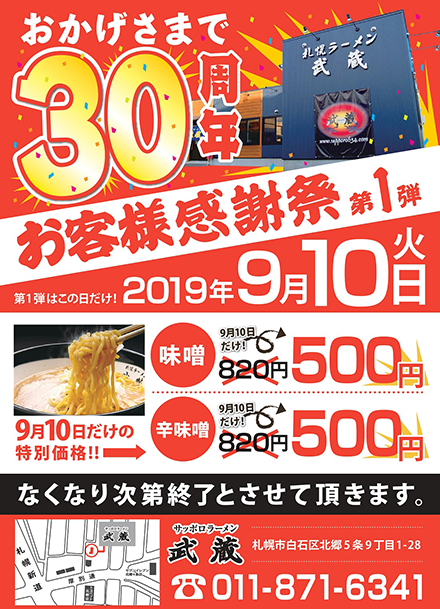

創業３０周年記念『お客様感謝祭』のお知らせ 2019-09-04

謹啓 時下益々ご清栄のこととお喜び申し上げます。
さて、今年の春で武蔵も満３０周年を迎える事ができました。
これもひとえにお客様一人一人のおかげと心から感謝しております。
これからも今まで以上に頑張って行きますので
よろしくお願いいたします。
この感謝の気持ちを形に変えさせていただきました。
武蔵本店にて『お客様感謝際』を開催いたします。
皆様ご多忙のこととは存じますが、 ご来店お待ちしております。
秋の北海道物産展、イベント出店のお知らせ 2019-09-03
■2019年9月6日(金)～2019年9月11日(水)の6日間『さっぽろオータムフェスト』《大通４丁目会場》
■2019年9月13日(金)～9月16日(月)の4日間『テレビ大阪ＹＡＴＡＩフェス』《大阪城公園 太陽の広場》
■2019年9月18日(水)～9月23日(月)の6日間『全国ご当地グルメッセｉｎ仙台』《夢メッセみやぎ 本館 展示場》』
■2019年9月18日(水)～9月24日(火)の7日間『秋の大北海道展』《高島屋 玉川店 本館６階 催会場》
■2019年9月25日(水)～9月30日(月)の6日間『阪神の北海道市場』《阪神 梅田本店 ８階催場》
■2019年10月2日(水)～10月8日(火)の7日間『大北海道展』《大和 香林坊店 ８階催事ホール》
■2019年10月3日(木)～10月6日(日)の4日間『北海道フェアｉｎ代々木～ザ・北海食道～』《代々木公園 野外音楽堂前広場》』
■2019年10月10日(木)～10月14日(月)の5日間『北海道まるごとフェアｉｎサンシャインシティ』《池袋サンシャインシティ 展示ホール》
■2019年10月16日(水)～10月21日(月)の6日間『秋の北海道物産展』《そごう 大宮店 ７階催事場》
■2019年10月16日(水)～10月21日(月)の6日間『秋の大北海道市』《下関大丸 ６階催事場》
皆様のお越しをお待ちしております！！